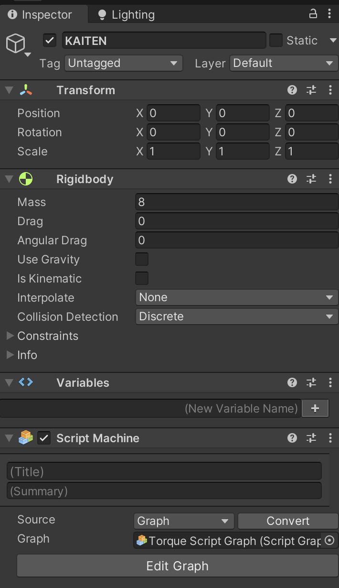
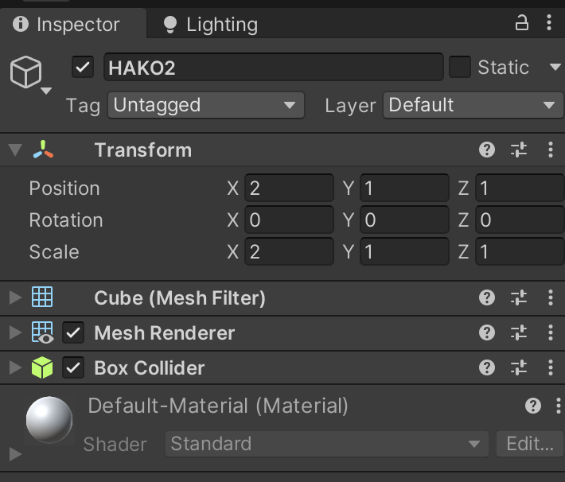
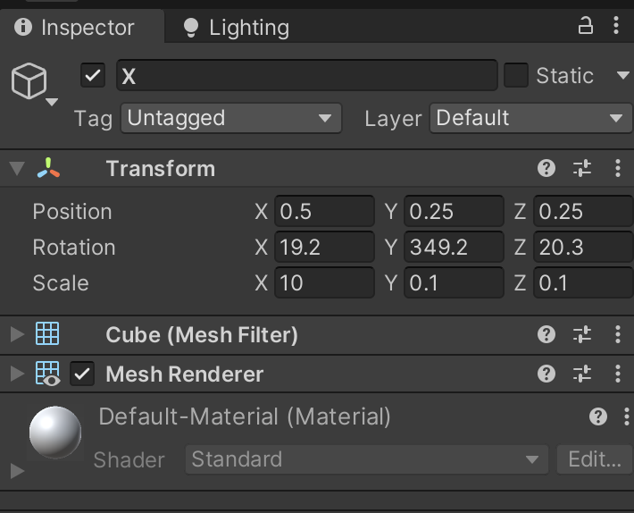
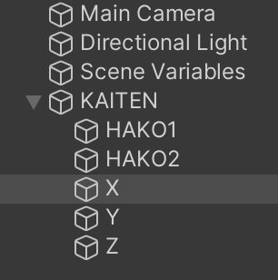
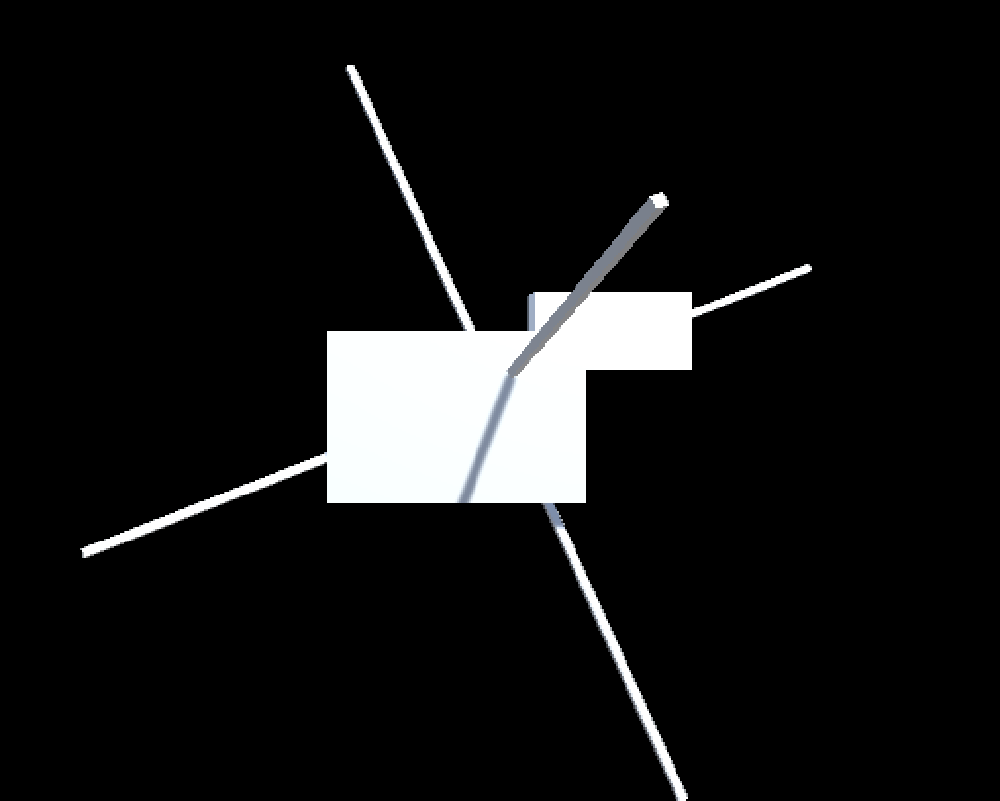
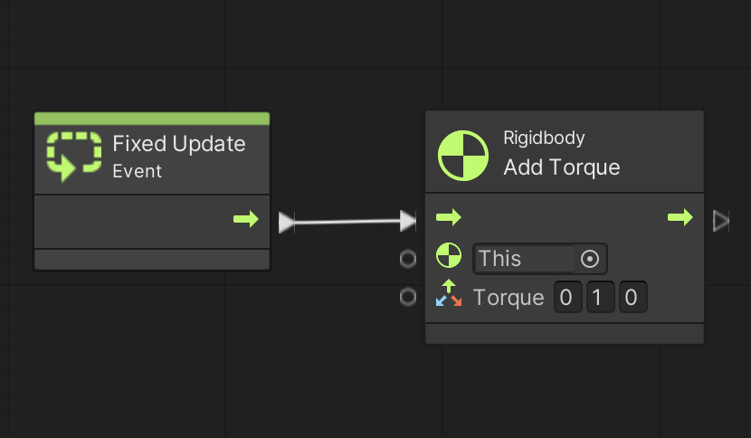
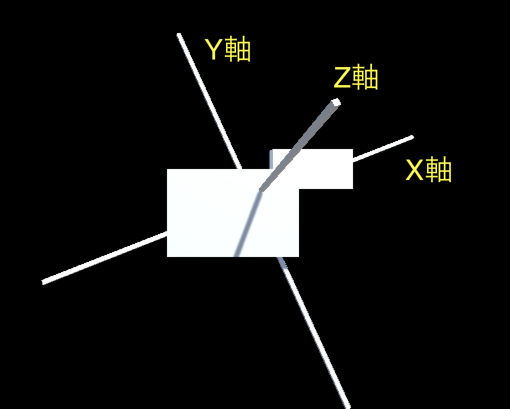
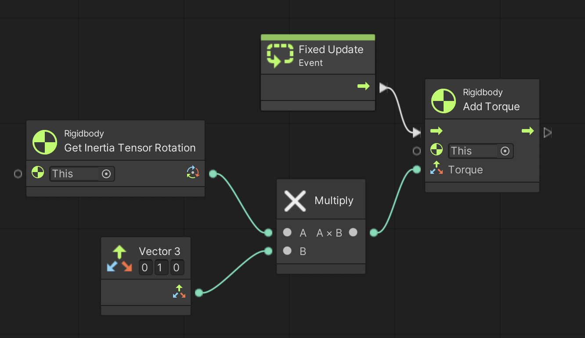
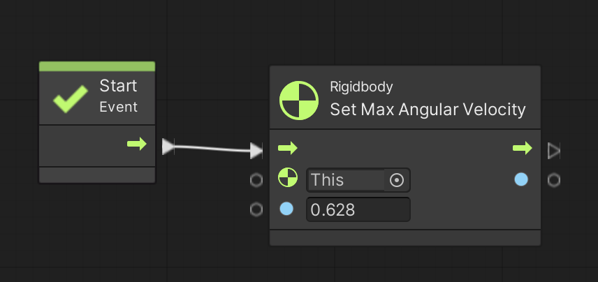

次はゲームオブジェクトにトルク(Torque)を与えて物理的に動かしてみます。
演習を行う前に新しいシーンを作って回転物を作成します。
少し長いので慎重に進めて下さい。
こちらのテキストに従ってシーンを新規作成し、シーン名を「Torque Scene」にする。背景色は任意で構わない
ヒエラルキー右クリック → Create Empty で空オブジェクトを新規作成し、名前を「KAITEN」、Position を (0,0,0)にする
KAITEN に Rigidbody コンポーネントをアタッチする
KAITEN のインスペクタを表示して Rigid Body の Mass に 8 を入れる
更に Rigid Body の Angular Drag に 0 を入れる
更に Rigid Body の Use Gravity のチェックを外す
アセットフォルダの空いている部分を右クリックしてメニューを表示し、Create → Visual Scripting → Script Graph を選ぶ
アセットフォルダ内に「New Script Graph」というアセットが出来るので「Torque Script Graph」に名前を変更する
KAITEN に Script Machine コンポーネントをアタッチする
Script Machine の Graph の None と書いてあるセルに Torque Script Graph をドロップする
ここまでで KAITEN のインスペクタは次の様になります。
図1. KAITEN のインスペクタ
では準備を続けます。
ヒエラルキー右クリック → 3D Object → Cube で箱を新規作成し、名前を「HAKO1」、Position を (0,0,0)、Scale を (3,2,1) にする
ヒエラルキー右クリック → 3D Object → Cube で箱を新規作成し、名前を「HAKO2」、Position を (2,1,1)、Scale を (2,1,1) にする
ここまでで HAKO1 と HAKO2 のインスペクタは次の様になります。
図2. HAKO1 のインスペクタ
図3. HAKO2 のインスペクタ
では準備を続けます。
ヒエラルキー右クリック → 3D Object → Cube で箱を新規作成し、名前を「X」、Position を (0.5, 0.25, 0.25)、Rotation を (19.2, 349.2, 20.3 )、Scale を (10, 0.1, 0.1) にする
インスペクタから Box Collider コンポーネントを削除する (3点ドッドをクリック → Remove Component)
X をコピーして名前を「Y」にし、Scale を (0.1, 10, 0.1) にする
X をコピーして名前を「Z」にし、Scale を (0.1, 0.1, 10) にする
X、Y、Z から Box Collider を削除するのを忘れるとうまく回らないので気を付けて下さい。
ここまでで X のインスペクタは次の様になります(YとZは省略)。
図4. X のインスペクタ
あとは親子関係を作って準備は終わりです。
ヒエラルキーで HAKO1、HAKO2、X、Y、Z を範囲選択し KAITEN の上にドロップして親子関係にする( KAITEN が親、その他が子供)
この時のヒエラルキーは次の様になっています。
図5. 親子関係を作る
最終的に次の様な画面になってれば OK です
図6. KAITEN
実世界で何か物を回転させたい時は回転軸の方向にトルク(単位はニュートン・メートル)を与え続ける必要があります。
さて Unity でゲームオブジェクトにトルクを与えるユニットは Rigidbody Add Torque (Torque) ユニット(rigidbody add Torque で検索)です。
このユニットを Fixed Update イベントの中で実行し続けます。
※ 物理演算を使ってるので Update イベントではなくて Fixed Update イベントを使います
なお3次元空間なので、トルクは3次元ベクトル(Vector3)を使って x,y,z 方向別に指定します。
では早速図 7 を実行してください。
このスクリプトでは Y 軸(上)方向に 1 [ニュートン・メートル]のトルクを与えて回転させています。
図 7 . トルクを与え続けて回転 (歳差運動が起きる例)
ところが図 7 を実行すると、いわゆる歳差運動が生じてコマの様に回転軸がぶれながら回転している事に気がつくと思います。
今回例として使っている KAITEN の様に、重心が中心からズレている物体はある方向(慣性主軸と言います)にトルクを与えないと歳差運動が生じます。
慣性主軸には X 軸、Y 軸、Z 軸の 3 方向があるのですが、KAITEN の場合はゲームオブジェクト X、Y、Z が慣性主軸となります(図 8)。
図 8 . KAITEN の 慣性主軸方向
この慣性主軸の方向を自力で計算して求めるのはなかなか大変な作業なのですが、Unity の場合は図 9 の様に、Rigidbody Get Inertia Tensor Rotation ユニット(rigidbody get inertia tensor rotation で検索)で取得できるクォータニオンをトルクにかけてあげることで簡単に求めることが出来ます。
図 9 . トルクを与え続けて回転 (歳差運動が起きない例)

では図 9 のスクリプトを実行して下さい。
今度は Vector3 で指定した (0,1,0) を元に慣性主軸の Y 軸方向を求めてから Add Torque ユニットに入力してますので綺麗に回転すると思います。
上手く動いたら Vector3 の値を (1,0,0) や (0,0,1) に変更して X 軸や Z 軸でも回転することを確認して下さい。
また 1 をもっと大きい数字に変えると速く回転しますので、こちらも試してみて下さい。
Rigid Body の Angular Drag の値はブレーキの強さ(＝ 回転のし辛さ)を意味します。 準備のところで KAITEN の Rigid Body の Angular Drag の値を 0 にしていますので今は全くブレーキがかかっていない状態です。
では充分に回転が早くなったら実行を停止しないで Angular Drag に大きな値(10くらい)を入れてみて下さい。
急ブレーキがかかると思います。
ここから先は少し難しい話なので分からなければ飛ばしても結構です。
ただし Unity の物理演算機能を使いこなすためには大事な知識ですので興味のある人は是非トライして下さい。
まずトルクと回転運動の運動方程式のおさらいをします。
3x3 実対称行列 $I$ をある回転体の慣性モーメント、$w = (w_x,w_y,w_z)$ を重心(回転中心)まわりの角速度、$N$ をトルクとすると、回転運動の運動方程式は
\[ I\frac{dw}{dt} = N \]
で表されます。
ここで $\frac{dw}{dt} = (\frac{dw_1}{dt},\frac{dw_2}{dt},\frac{dw_3}{dt})$ は角加速度です。
さて慣性モーメントは実対称行列なので固有値と固有ベクトルを求めて対角化する事が可能です。
固有値を $i=(i_x, i_y, i_z)$、対応する固有ベクトルを $V=(V_x,V_y,V_z)$ とすると、
となります。
このとき固有値を「主慣性モーメント」と呼び、対応する固有ベクトルを「慣性主軸」と呼びます。
なお固有値と固有ベクトルを慣性主軸座標系の X、Y、Z どの軸に割り当てるかについては自由度があって好きに決めて良いのですが、慣性主軸の方向については座標系が右手系か左手系かを考慮して決める必要があります。
ではここで試しに $a$ を任意の実数とし、トルク $N$ を
\[ N = V \begin{bmatrix} 0\\ a\\ 0 \end{bmatrix} = aV_y \]の様に慣性主軸 $V_y$ 方向に与えてみましょう。
すると
\begin{align*} \frac{dw}{dt} &= I^{-1}N \\ &= (V^\textrm{T})^\textrm{-1} \begin{bmatrix} 1/i_x & 0 & 0 \\ 0 & 1/i_y & 0 \\ 0 & 0 & 1/i_z \end{bmatrix} V^\textrm{-1} N \\ & =V \begin{bmatrix} 1/i_x & 0 & 0 \\ 0 & 1/i_y & 0 \\ 0 & 0 & 1/i_z \end{bmatrix} V^\textrm{T} V \begin{bmatrix} 0\\ a\\ 0 \end{bmatrix} \\ &=V \begin{bmatrix} 0 \\ a/i_y \\ 0 \end{bmatrix} \\ & = \frac{a}{i_y} V_y \end{align*}
となりますので、慣性主軸 $V_y$ を中心に $a/i_y$ [rad/$s^2$] の角加速度で回転する事が分かります。
$V_x$、$V_z$ についても同様の話が成り立ちます。
では上の例に運動方程式を当てはめていきましょう。
なお計算に使った Python のコードはこちらです。
計算方法の詳細についてはこちらのコードを参照して下さい。
ではまず KAITEN の $I$ を求めます。
KAITEN は 2 個の Cube (HAKO1 と HAKO2) から出来ていますので、まずそれらの慣性モーメントを求めます。
Cube の慣性モーメントは立方体の慣性モーメントを求めるためのモデルを使って求められます。
このモデルでは立方体の各面の中心に同じ質量の 6 個の質点があると仮定しますので、Cube の中心座標を Vector3 型の Position = $(p_x,p_y,p_z)$、大きさを Vector3 型の Scale=$(s_x,s_y,s_z)$ で表すと各質点の座標 $r$ は
となります。
重さは今回の例では 1 [kg/$m^3$]の密度で計算することにしました。
よって重さ = $s_xs_ys_z$ [kg] です。
さてHAKO1 の Position=(0,0,0)、Scale=(3,2,1) と、HAKO2の Position=(2,1,1)、Scale = (2,1,1) を上の式に代入すると次の様になります。
HAKO1 重さ 6 質点座標(ローカル座標系) [[ 1.5000 0.0000 0.0000] [-1.5000 0.0000 0.0000] [ 0.0000 1.0000 0.0000] [ 0.0000 -1.0000 0.0000] [ 0.0000 0.0000 0.5000] [ 0.0000 0.0000 -0.5000]] HAKO2 重さ 2 質点座標(ローカル座標系) [[ 3.0000 1.0000 1.0000] [ 1.0000 1.0000 1.0000] [ 2.0000 1.5000 1.0000] [ 2.0000 0.5000 1.0000] [ 2.0000 1.0000 1.5000] [ 2.0000 1.0000 0.5000]]
以上の式を使って HAKO1 と HAKO2 の質点座標と全体の重さを求めたら、KAITEN の重心(回転中心)を求めます。
$m_1$ を HAKO1 の重さ、$m_2$ を HAKO2 の重さ、$m = m1+m_2$ とした時、重心 = (m_1 * HAKO1のPosition + m_2 * HAKO2のPosition)/m で求まります。
するとこの計算結果は次の様になります。
ちなみに重心の位置は Rigidbody.centerOfMass の値と一致します。
重さ計 8 重心位置(ローカル座標系) = Rigidbody.centerOfMass [ 0.5000 0.2500 0.2500]
次に $r$ から重心位置を引いて重心からの相対座標に変換します。
変換後の $r$ は次の様になります。
Hako 1 質点の重心からの相対座標(ローカル座標系) [[ 1.0000 -0.2500 -0.2500] [-2.0000 -0.2500 -0.2500] [-0.5000 0.7500 -0.2500] [-0.5000 -1.2500 -0.2500] [-0.5000 -0.2500 0.2500] [-0.5000 -0.2500 -0.7500]] Hako 2 質点の重心からの相対座標(ローカル座標系) [[ 2.5000 0.7500 0.7500] [ 0.5000 0.7500 0.7500] [ 1.5000 1.2500 0.7500] [ 1.5000 0.2500 0.7500] [ 1.5000 0.7500 1.2500] [ 1.5000 0.7500 0.2500]]
さて各質点の質量を $m_i$ とすると慣性モーメントは
\[ \sum_{i} m_i \left ( |r|^2 \begin{bmatrix} 1 & 0 & 0 \\ 0 & 1 & 0 \\ 0 & 0 & 1 \\ \end{bmatrix} - r \otimes r \right ) \]
で求まります。
ここで $\otimes$ は直積です。
Cube の場合は質量は各点で均等になりますので $m_1 = m_2 = 1$ [kg] となります。
実際に計算すると Hako1 と Hako2 の慣性モーメントは次の様になりました。
Hako 1 慣性モーメント [[ 3.2500 -0.7500 -0.7500] [-0.7500 6.8750 -0.3750] [-0.7500 -0.3750 8.3750]] Hako 2 慣性モーメント [[ 2.5833 -2.2500 -2.2500] [-2.2500 6.4583 -1.1250] [-2.2500 -1.1250 6.4583]]
あとはこれらを足し合わせれば全体の慣性モーメント $I$ が以下の様に求まります。
全体の慣性モーメント [[ 5.8333 -3.0000 -3.0000] [-3.0000 13.3333 -1.5000] [-3.0000 -1.5000 14.8333]]
さてこれで $I$ が求まったので、次は $I$ の固有値と固有ベクトルを計算して主慣性モーメントと慣性主軸を求めます。
ところが上にも書いたように慣性主軸座標系の X、Y、Z 軸をどう割り当てるかは任意に決めて良いので何らかの割当ルールを決めないといけません。
Unity も何らかの割当ルールがあると思うのですが、調べるのが面倒だったので今回は手を抜いて Rigidbody.inertiaTensor の戻り値を参考に手作業で割り当てることにしました。
すると主慣性モーメント $i$ と慣性主軸 $V$ 及び座標軸の回転角度は次の様になりました。
主慣性モーメントは Rigidbody.inertiaTensor、軸の回転角度は Rigidbody.inertiaTensorRotation(をオイラー角に変換) の値と一致していることが分かります。
主慣性モーメント = Rigidbody.inertiaTensor [ 3.7780 14.2817 15.9403] 慣性主軸 [[ 0.8996 -0.3990 -0.1775] [ 0.3277 0.8855 -0.3293] [ 0.2886 0.2381 0.9274]] 回転角度(オイラー角) = Rigidbody.inertiaTensorRotation [ 19.2275 349.1635 20.3105]
以上で、重心(回転中心)と主慣性モーメントと慣性主軸、及びその回転角度が求まりました。
図10に KAITEN の慣性主軸を示します。
ちなみに KAITEN の子ゲームオブジェクトの X、Y、Z は Position が重心、Rotation が軸の回転角度なので慣性主軸を表しています。
図10. KAITEN の慣性主軸(赤: X軸、緑: Y軸、青: Z軸

では実際にトルクを与えて回転させてみましょう。
上の例では上方向ベクトル (0,1,0) に Rigidbody.inertiaTensorRotation をかけてトルク $N$ を作っていますが、Rigidbody.inertiaTensorRotation は慣性主軸 $V$ と同一視出来るので、
となります。
よって角加速度は
となります。
実際に計算すると次の様になりました。
トルク(ローカル座標系) [-0.3990 0.8855 0.2381] 角加速度(ローカル座標系) [-0.0279 0.0620 0.0167]
これから1秒ごとの角速度を求めると、理論的には次の様になります。
角速度(ローカル座標系) 1 秒後 : [-0.0279 0.0620 0.0167] 2 秒後 : [-0.0559 0.1240 0.0333] 3 秒後 : [-0.0838 0.1860 0.0500] 4 秒後 : [-0.1117 0.2480 0.0667] 5 秒後 : [-0.1397 0.3100 0.0834] 6 秒後 : [-0.1676 0.3720 0.1000] 7 秒後 : [-0.1956 0.4340 0.1167] 8 秒後 : [-0.2235 0.4960 0.1334] 9 秒後 : [-0.2514 0.5580 0.1500]
実際に Unity で角速度をデバッグ出力したら次の様になったので、確かに運動方程式に従って KAITEN が回転していることが分かります(参考までに使用した計測スクリプトはこちら)。
1 秒後 : [-0.0279, 0.0620, 0.0167] 2 秒後 : [-0.0559, 0.1240, 0.0333] 3 秒後 : [-0.0838, 0.1860, 0.0500] 4 秒後 : [-0.1117, 0.2480, 0.0667] 5 秒後 : [-0.1397, 0.3100, 0.0834] 6 秒後 : [-0.1676, 0.3720, 0.1000] 7 秒後 : [-0.1956, 0.4340, 0.1167] 8 秒後 : [-0.2235, 0.4960, 0.1334] 9 秒後 : [-0.2514, 0.5580, 0.1500]